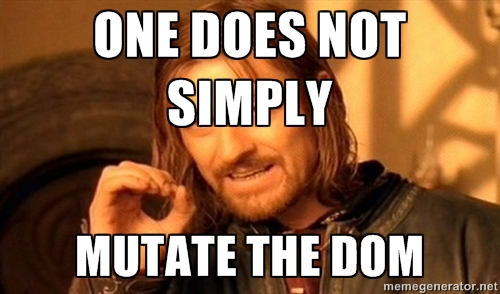

 Boromir is an API that allows you to not simply mutate the DOM. It will provide a virtual DOM structure consisting of plain JavaScript objects. You can modify the virtual DOM structure, without having to think about the number of updates or changes you make.
When you finished your changes to the virtual DOM, Boromir will then apply those changes back onto the original DOM structure. It will automagically calculate the most efficient way. Since you only need to update once, using Boromir is also faster than applying every single change.
You start by creating a record, which is Boromirs representation of a DOM node.
A simple example would be updating a DOM nodes text.
This is my first paragraph.
Classes can be read by using the classes() method of a record. Use the addClass() and removeClass() methods to modify classes as shown in the example below.
This is my first paragraph.